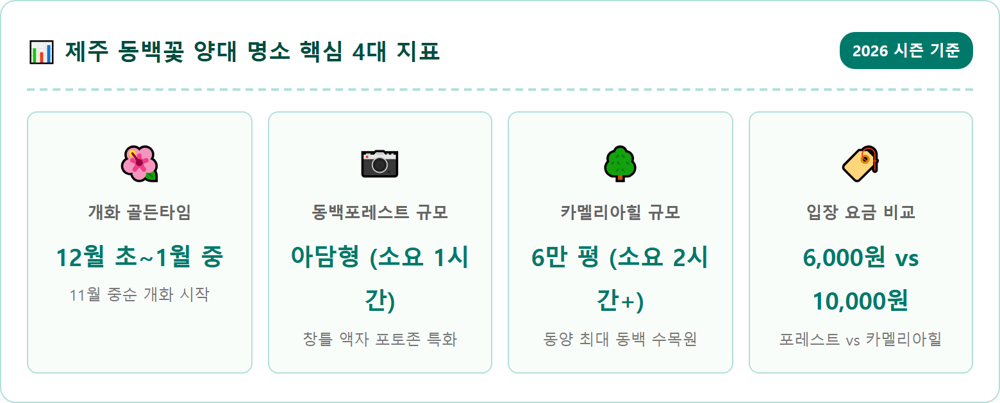
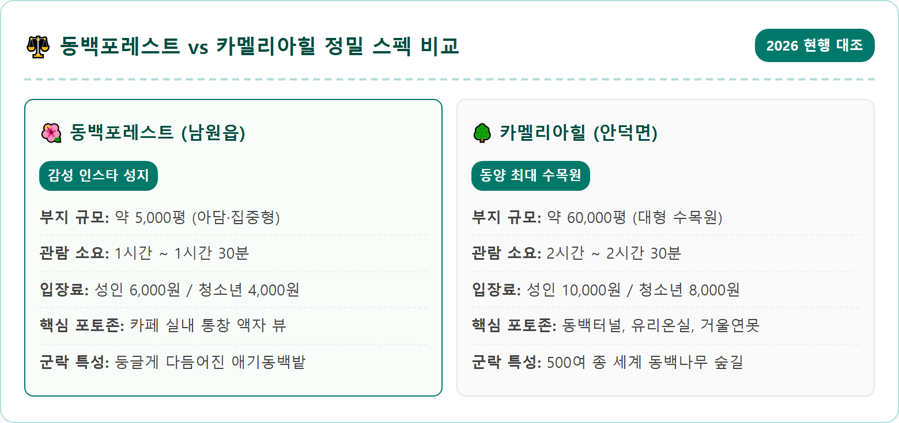
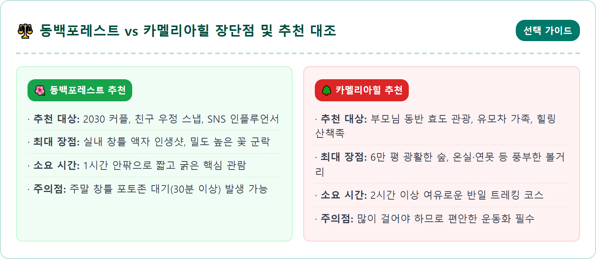
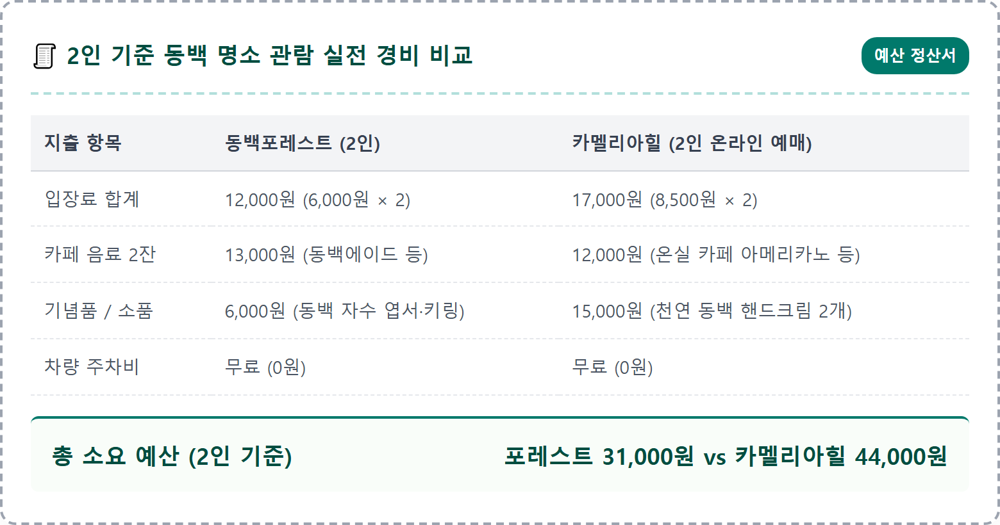
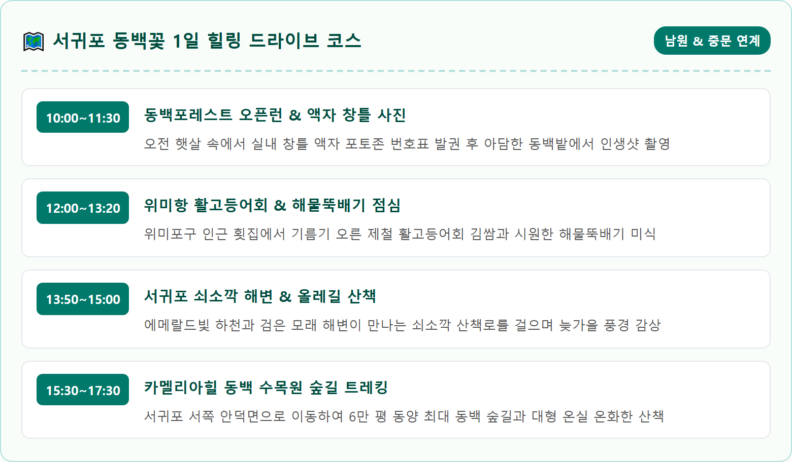
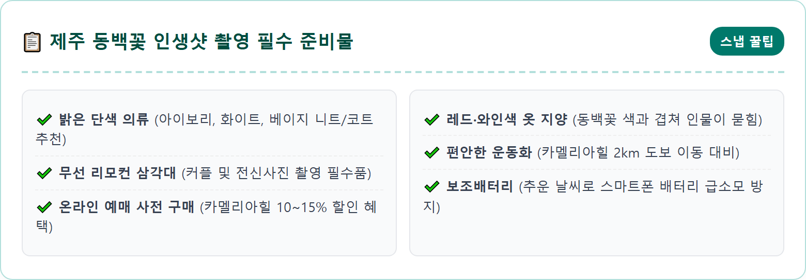
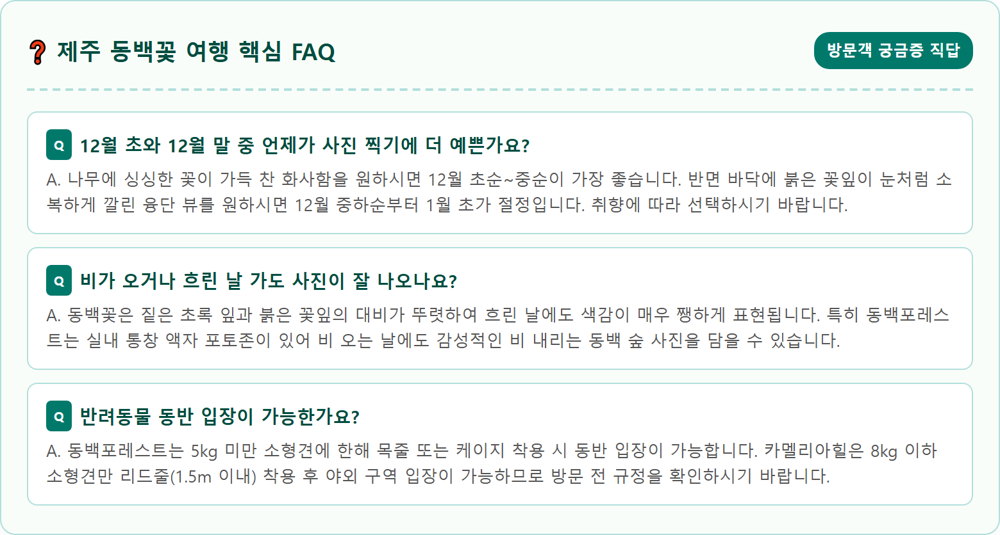

A vibrant, breathtaking landscape photograph of a blooming winter camellia garden in Seogwipo, Jeju Island, South Korea. Lush, round camellia trees filled with thousands of vivid crimson-pink blossoms and deep glossy dark green leaves. The ground is carpeted with a dense layer of fallen magenta pink petals along a clean walking path. In the background, traditional Jeju black basalt stone walls and gentle rolling hills under a soft blue sky with gentle sunlight. Two cheerful travelers in warm stylish winter coats walk happily, admiring the flowers. Ultra-detailed, rich color saturation, 8k resolution, cinematic Korean travel photography style, 1:1 aspect ratio.

겨울이 깊어갈수록 육지의 자연은 앙상한 가지만을 남긴 채 무채색으로 변해가지만, 남쪽 섬 제주는 차가운 계절을 비웃기라도 하듯 가장 찬란하고 붉은 꽃의 축제를 시작합니다. 제주 겨울 여행의 독보적인 주인공은 바로 삭풍 속에서도 탐스럽게 피어나는 '동백꽃(Camellia)'입니다.
제주에서 겨울철에 만나는 동백꽃은 흔히 초봄에 피어나는 토종 동백과 달리, 11월 중순부터 피기 시작하는 '애기동백(사상카)' 품종이 대부분입니다. 애기동백은 꽃송이 전체가 툭 떨어지는 토종 동백과 달리, 장미처럼 붉고 화사한 꽃잎이 낱장으로 흩날리며 떨어져 나무 아래에 두터운 핑크빛과 붉은빛의 융단을 푹신하게 깔아놓는 것이 특징입니다.
가장 아름다운 꽃을 만날 수 있는 개화 골든타임은 11월 하순부터 12월 중순 사이입니다. 11월 20일경부터 꽃봉오리가 팝콘 터지듯 피어나기 시작하여, 12월 첫 주가 되면 나무 전체가 만개 상태에 이릅니다. 특히 12월 중순 이후로는 나무에 핀 생생한 꽃과 바닥에 융단처럼 깔린 붉은 꽃잎이 완벽한 조화를 이루어, 1년 중 가장 낭만적인 사진을 남길 수 있는 절정기에 접어듭니다.
서귀포시 남원읍 신흥리에 자리 잡은 '동백포레스트'는 최근 수년간 SNS와 인스타그램을 뜨겁게 달구며 2030 여행객들의 원픽으로 자리매김한 감성 동백 명소입니다. 이곳의 가장 큰 시그니처는 동백나무 밭 한가운데 자리한 새하얀 2층 카페 건물 1층에 마련된 '네모난 통창 액자 포토존'입니다.
커다란 통유리 창문 너머로 붉게 물든 동백나무 군락이 마치 살아 숨 쉬는 한 폭의 명화 액자처럼 완벽한 구도로 프레임 안에 들어옵니다. 창가 의자에 걸터앉아 역광과 순광이 교차하는 감성적인 실루엣 사진을 찍기 위해 전국 각지에서 수많은 연인과 여행자들이 줄을 섭니다. 현장에서는 스마트폰 번호표 시스템을 운영하여 대기 순서에 맞춰 쾌적하게 사진을 촬영할 수 있도록 배려하고 있습니다.
카페 밖으로 나서면 버섯 모양으로 둥글고 단정하게 전정된 수백 그루의 애기동백나무들이 미로처럼 펼쳐집니다. 어른 키를 살짝 넘는 아담한 높이로 정돈되어 있어 꽃에 파묻힌 듯한 클로즈업 사진을 찍기에 최적이며, 밭 사이사이에 놓인 하얀 벤치와 거울, 조명 등 아기자기한 포토존들이 사진의 완성도를 한껏 높여줍니다.

서귀포시 안덕면 상창리에 위치한 '카멜리아힐(Camellia Hill)'은 무려 6만여 평(약 20만㎡)의 드넓은 부지에 조성된 동양 최대 규모의 동백 수목원입니다. 30여 년 동안 가꾸어온 정성 어린 손길이 깃든 이곳에는 전 세계 80개국에서 수집한 500여 종, 6,000여 그루의 동백나무가 울창한 원시림과 어우러져 거대한 숲을 이루고 있습니다.
카멜리아힐의 가장 큰 강점은 '압도적인 스케일과 다채로운 테마'입니다. 애기동백이 주를 이루는 여타 농장들과 달리, 새하얀 백동백부터 연분홍빛, 짙은 와인빛에 이르는 희귀 동백 품종들이 가을부터 이른 봄까지 시차를 두고 피어나 사계절 내내 풍성한 볼거리를 선사합니다.
탐방로를 따라 걷다 보면 머리 위로 붉은 동백꽃이 아치형 터널을 이루는 '동백나무 숲길', 잔잔한 수면에 동백꽃과 하늘이 비치는 '보순연지', 이국적인 열대 식물과 수국, 동백이 어우러진 대형 '유리온실 정원', 그리고 드넓은 잔디광장까지 다채로운 테마 공간이 쉼 없이 이어집니다. 숲길 곳곳에 걸린 "느려도 괜찮아요", "사랑해" 등의 감성적인 한글 가랜드 문구는 산책의 발걸음에 따뜻한 위로를 더해줍니다.
두 명소는 방문객이 얻을 수 있는 '사진의 무드'에서 확연한 차이를 보입니다. 인물 중심의 트렌디하고 감각적인 화보 사진을 원하신다면 '동백포레스트'가 압도적으로 유리합니다. 잘 가꾸어진 동백나무들이 빽빽하게 밀집되어 있어 화각 안에 다른 관광객이 걸리지 않도록 인물에 초점을 맞춘 감성 스냅을 연출하기가 매우 수월합니다.
특히 카페 1층 액자 창틀 사진은 날씨가 흐리거나 바람이 부는 날에도 완벽한 실내 조명과 자연 채광이 조화를 이루어 실패 없는 인생샷을 보장합니다. 야외 군락지 바닥에 깔린 분홍빛 꽃잎 양탄자 위에 앉아 찍는 로맨틱한 커플 사진이나 단독 프로필 사진은 SNS 피드를 화사하게 장식하기에 손색이 없습니다.
반면 '카멜리아힐'은 광활한 자연 풍경과 인물이 자연스럽게 어우러지는 풍경 스냅에 최적화되어 있습니다. 높은 키를 자랑하는 거대한 동백나무 숲길을 걸어가는 뒷모습, 유리온실 안에서 따사로운 햇살을 받으며 찍는 사진, 넓은 연못과 야외 잔디밭을 배경으로 한 여유로운 가족사진 등 사진의 구도와 배경이 무궁무진하게 변주됩니다. 사진 찍기를 어색해하는 어르신이나 아이들도 자연스럽게 산책하는 모습을 포착할 수 있어 만족도가 높습니다.

여행 일정을 계획할 때 관람 소요 시간은 전체 동선을 좌우하는 매우 중요한 요소입니다. '동백포레스트'는 부지 면적이 약 5,000평 규모로 아담하고 집중도가 높아, 전체를 둘러보고 사진을 촬영하는 데 약 1시간에서 1시간 30분이면 충분합니다.
경사가 거의 없는 평지형 과수원 구조로 동선이 단순하여 짧은 시간 안에 핵심 사진을 남기고 다음 여행지로 이동하기에 매우 효율적입니다. 서귀포 표선이나 성산 방면으로 넘어가는 동선 중간에 알짜배기 코스로 끼워 넣기에 최적의 조건을 갖추고 있습니다.
반면 '카멜리아힐'은 코스 전체 길이가 2km에 달하는 대규모 수목원이므로, 여유 있게 둘러보려면 최소 2시간에서 2시간 30분 이상의 넉넉한 일정을 배정해야 합니다. 완만한 경사로와 야자수 매트, 평탄한 흙길로 잘 정비되어 있어 유모차나 휠체어 이동이 가능하지만, 도보량이 상당하므로 걷기 편안한 신발 착용이 필수적입니다. 쉬어갈 수 있는 정자와 온실 카페가 코스 중간중간 잘 배치되어 있어 반일 힐링 코스로 손색이 없습니다.
2026년 현행 기준 이용 요금을 살펴보면, 동백포레스트는 성인 6,000원, 청소년 및 어린이 4,000원으로 상대적으로 부담 없는 착한 가격을 유지하고 있습니다. 만 65세 이상 경로 우대자와 제주도민은 4,000원으로 할인 적용됩니다. 카페 이용은 필수가 아니며 입장권만 구매하여 자유롭게 야외 정원과 실내 포토존을 이용할 수 있습니다. 카페에서는 시그니처 메뉴인 동백 크림라떼와 동백 에이드를 맛볼 수 있습니다.
카멜리아힐은 성인 10,000원, 청소년 8,000원, 어린이(만 3세~초등학생) 7,000원입니다. 네이버 지도나 야놀자, 트립닷컴 등 온라인 예매처를 통해 방문 1시간 전 모바일 티켓을 사전 구매하면 약 10~15% 할인된 가격(성인 기준 약 8,500원)에 알뜰하게 이용할 수 있으므로 사전 예매를 적극 권장합니다.
두 곳 모두 특색 있는 동백 기념품 숍을 운영하고 있습니다. 동백포레스트는 아기자기한 동백 일러스트 엽서와 마스킹테이프, 에코백, 동백 자수 파우치 등 감성 소품 위주로 구성되어 있어 2030의 취향을 저격합니다. 카멜리아힐은 천연 동백오일 에센스, 동백 바디로션, 동백 비누, 핸드크림 등 천연 화장품 뷰티 라인업이 매우 충실하여 부모님 선물용으로 인기가 높습니다.

결론적으로 두 명소 중 어디를 선택해야 할지 고민이라면 동행인의 성향과 여행의 메인 테마를 기준으로 결정하시면 명쾌합니다.
동백포레스트를 강력 추천하는 유형:
· 연인과의 로맨틱한 커플 스냅, 웨딩 스냅 촬영이 목적인 분
· 인스타그램 피드를 장식할 감성 충만한 단독 인생샷을 건지고 싶은 분
· 1시간 안팎으로 깔끔하게 사진을 찍고 다음 맛집으로 빠르게 이동하고 싶은 뚜벅이 및 단기 여행자
카멜리아힐을 강력 추천하는 유형:
· 칠순, 환갑 등 부모님을 모시고 떠난 효도 여행으로 여유로운 숲 산책을 즐기고 싶은 가족
· 유모차를 밀거나 어린아이가 마음껏 뛰어놀 수 있는 넓고 안전한 자연 공간이 필요한 가족
· 동백꽃뿐만 아니라 억새, 핑크뮬리, 온실 열대식물 등 다양한 볼거리를 한자리에서 누리고 싶은 여행자
동백꽃 사진을 가득 담은 후 허기진 배를 채우기 위한 서귀포 미식 투어도 여행의 커다란 즐거움입니다. 동백포레스트가 위치한 남원읍 일대는 청정 바다 위미항과 인접해 있어 겨울철 최고 횟감인 '활고등어회'를 맛보기에 최적의 입지입니다.
비린내 없이 찰지고 고소한 고등어회 한 점을 특제 양파 간장 소스에 푹 찍어 조미 김 위에 올리고, 참기름으로 비벼낸 양념 밥을 살짝 얹어 싸 먹는 고등어 김쌈은 남도 육지의 생선회와는 또 다른 차원의 고소한 감칠맛을 선사합니다. 얼큰하게 끓여낸 고등어 맑은탕이나 지리탕 한 그릇을 곁들이면 겨울 추위가 눈 녹듯 사라집니다.
카멜리아힐 주변 안덕면과 중문관광단지 일대에는 흑돼지 참숯 구이 명가들과 감성 오션뷰 베이커리 카페들이 즐비합니다. 두툼한 제주산 흑돼지 근고기를 멜젓에 찍어 먹고, 산방산과 형제섬이 내려다보이는 해안 절벽 카페에서 따뜻한 한라봉 감귤차를 마시며 서귀포의 겨울 노을을 감상해보세요.

동백포레스트(서귀포시 남원읍 생기악로 163-1)는 제주국제공항에서 번영로를 타고 남조로를 거쳐 남쪽으로 약 50분 정도 소요됩니다. 렌터카 내비게이션에 명칭을 검색하시면 쉽게 진입할 수 있으며, 과수원 진입로가 다소 좁은 편이므로 마주 오는 차량에 주의해 서행 운전하셔야 합니다. 주차장은 농장 입구에 80여 대 규모의 무료 전용 주차장이 마련되어 있으나, 주말 피크 타임(13:00~15:00)에는 만차가 될 수 있으므로 아침 10시 전후 방문을 권장합니다.
카멜리아힐(서귀포시 안덕면 병악로 166)은 공항에서 평화로를 타고 남서쪽으로 약 40분 소요됩니다. 왕복 4차선 도로와 연결되어 있어 초보 운전자도 진입이 매우 수월하며, 대형 관광버스 수십 대와 승용차 500대 이상을 동시에 수용할 수 있는 매머드급 무료 아스팔트 주차장이 완비되어 있어 주차 스트레스가 전혀 없습니다.
일정이 여유로우시다면 동백포레스트를 둘러본 후 남원 위미리의 '동백군락지', 서귀포 도순동의 '카멜리아힐'까지 중산간 도로를 따라 서쪽으로 이동하는 '서귀포 동백꽃 로드트립'을 완성해보세요. 남쪽 해안을 따라 펼쳐지는 귤밭의 주황빛과 동백의 붉은빛이 어우러지는 제주만의 따스한 겨울 낭만을 만끽할 수 있습니다.


| 구분 | 동백포레스트 (남원읍) | 카멜리아힐 (안덕면) |
|---|---|---|
| 위치 주소 | 제주특별자치도 서귀포시 남원읍 생기악로 163-1 | 제주특별자치도 서귀포시 안덕면 병악로 166 |
| 운영 시간 | 09:00 ~ 17:30 (입장 마감 17:00) | 08:30 ~ 18:00 (동절기 입장 마감 17:00) |
| 입장 요금 | 성인 6,000원 / 청소년 4,000원 | 성인 10,000원 / 청소년 8,000원 (온라인 할인) |
| 대표 포토존 | 카페 1층 대형 통창 액자 포토존 | 동백나무 터널, 유리온실, 보순연지 |
| 관람 소요 | 약 1시간 ~ 1시간 30분 내외 | 약 2시간 ~ 2시간 30분 내외 |
| 추천 대상 | 2030 커플, 감성 인스타 스냅 | 가족 여행, 부모님 효도 관광, 숲 산책 |